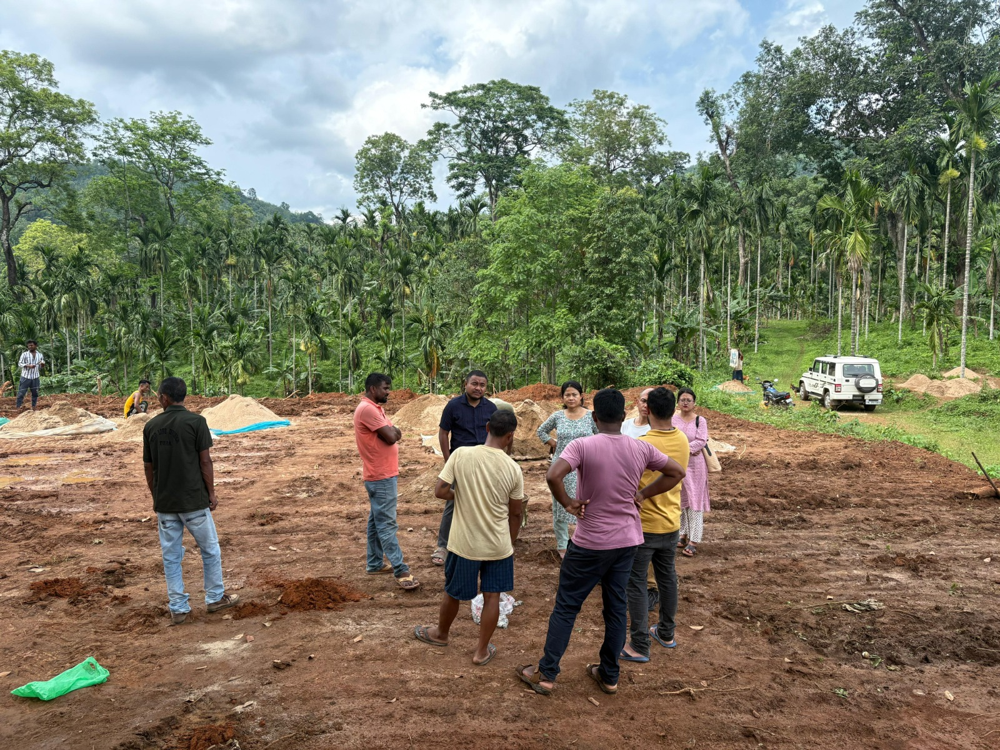
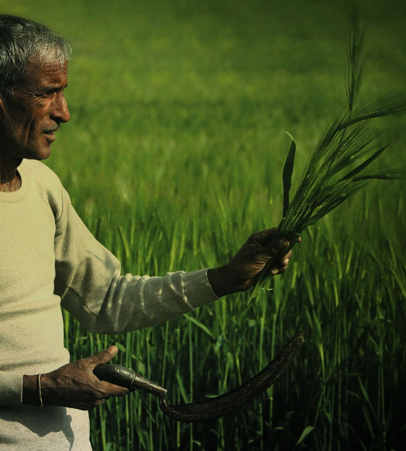
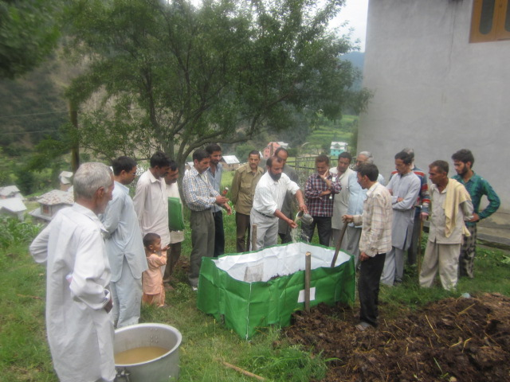

nurtured by tradition and guided by organic principles
Our Harvest


nurtured by tradition and guided by organic principles

our farmers are not merely participants in the supply chain—they are the living core of our organic movement
At Morarka Organic Foods Limited, our farmers are not merely participants in the supply chain—they are the living core of our organic movement. Spread across diverse agro-ecological regions, this community of growers is supported through the extensive field network and Internal Control System (ICS) established by Morarka Foundation, one of India's most comprehensive and trusted organic governance mechanisms.
Through the ICS, our field teams maintain continuous engagement with every farmer—visiting villages, monitoring fields, guiding record-keeping, and understanding the practical challenges they face. This relationship isn't transactional; it is a long conversation carried across seasons, harvests, and aspirations. Farmers receive support on both technical and livelihood fronts, including crop planning, financial clarity, input management, and compliance with organic standards.
Because organic farming demands care that goes beyond conventional practices, we offer structured training programmes on soil enrichment, bio-inputs, pest and nutrient management, and regenerative cultivation methods. Our staff evaluates soil conditions, climatic patterns, and field histories to recommend the most suitable crops, seeds, and practices—ensuring that every farm is aligned with ecological realities rather than market pressure alone.
With every field visit, every training, and every harvest, our goal remains simple: empower farmers with knowledge, ensure purity in every grain, and grow a community that thrives with dignity, confidence, and long-term resilience.
The purest expression of sustainable farming, nurtured by tradition and guided by organic principles
At Morarka Organic, every harvest reflects our commitment to sustainable farming, certified organic practices, and farmer empowerment. Through our Internal Control System (ICS), we work closely with farming communities across diverse agro-climatic regions of India to ensure full traceability, quality, and compliance from seed to store.
Our farmers follow eco-friendly cultivation patterns, integrating traditional knowledge with modern organic techniques. Crops are grown using natural inputs, crop rotation, and biodiversity-friendly methods, ensuring nutrient-rich, chemical-free produce.
From cereals, pulses, and oilseeds to fruits, vegetables, and spices, our harvest is diverse, abundant, and high-quality. Every grain, pod, and fruit represents ethical farming, environmental stewardship, and sustainable livelihoods for our farmer partners.
With 170+ certified organic products, Morarka Organic brings the best of India's farms to your table, nurturing both health and nature.
A glimpse into the lives and landscapes that bring organic goodness to your table


